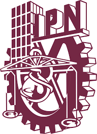
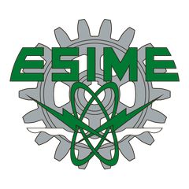

Bachillerato
Conoce cómo es estudiar Ingeniería en Comunicaciones y Electrónica antes de elegir carrera. Platica con estudiantes y ve lo que construyen desde los primeros semestres.


Ingeniería en Comunicaciones y Electrónica
ESIME Unidad Zacatenco
Exhibición de proyectos tecnológicos hechos por estudiantes de Ingeniería en Comunicaciones y Electrónica. Conoce, inspírate y construye tu futuro.
Estudiantes de ICE presentan los proyectos, prototipos e ideas que desarrollan en la carrera. Recorre la exhibición, pregunta cómo funcionan y conoce las áreas que están transformando la tecnología.
Antenas, redes y sistemas que llevan información de un lugar a otro, de la radio al internet de las cosas.
Circuitos, sensores y prototipos de hardware diseñados y armados por los propios estudiantes.
Software, sistemas embebidos y aplicaciones que resuelven problemas concretos.
Control, automatización y robótica: máquinas que miden, deciden y actúan solas.
Sonido y vibraciones: audio, control de ruido y espacios diseñados para escucharse mejor.
Automatización, conectividad, inteligencia artificial e innovación: los proyectos muestran cómo la ingeniería de ICE se conecta con la forma en que hoy se fabrica, se comunica y se decide.
ICE Impulsa está abierto a todo el público. Esto es lo que te llevas según en qué etapa estás.
Conoce cómo es estudiar Ingeniería en Comunicaciones y Electrónica antes de elegir carrera. Platica con estudiantes y ve lo que construyen desde los primeros semestres.
Mira lo que hacen otros semestres, conoce las áreas de especialidad y encuentra equipo o ideas para tus propios proyectos.
Conoce el trabajo de la nueva generación de ingenieros del Politécnico y platica con ellos sobre investigación y colaboración.
El programa con los horarios de presentaciones y actividades se publicará en esta página antes del evento. Vuelve a escanear el código QR para consultarlo.
Nada. La entrada es gratuita.
Todo el público: estudiantes de bachillerato, de licenciatura, de posgrado y cualquier persona interesada en la tecnología.
Ingeniería en Comunicaciones y Electrónica, una de las carreras de la ESIME Zacatenco del Instituto Politécnico Nacional. Forma ingenieros en comunicaciones, electrónica, computación, cibernética y acústica.